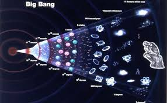
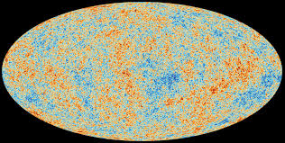

Informational Sources
Sources that were for images and extra vocab


Source with citaion:
Williams, Matt. “What is the Big Bang Theory? - Astronomy.” Phys.org, 18 December 2015, https://phys.org/news/2015-12-big-theory.html. Accessed 1 November 2024.
“Composition of Matter : Solid, Liquid, Gas.” Turito, 19 August 2022, https://www.turito.com/learn/chemistry/composition-of-matter-grade-8. Accessed 1 November 2024.

Source with citation:
“ESA - Cosmic Microwave Background (CMB) radiation.” European Space Agency, https://www.esa.int/Science_Exploration/Space_Science/Cosmic_Microwave_Background_CMB_radiation. Accessed 1 November 2024.
Source with citation:
“31 Space Emojis: Your Guide to the Galaxy.” Smileys, Emoticons And Emojis, 27 August 2024, https://mojiedit.com/space-emojis/. Accessed 1 November 2024.
Source with citation:
Riess, Adam G., and Michael S. Turner. “What is the Hubble Law? – Cosmos at Your Doorstep.” Cosmos at Your Doorstep, 31 March 2023, https://cosmosatyourdoorstep.com/2023/03/31/what-is-the-hubble-law/. Accessed 1 November 2024.